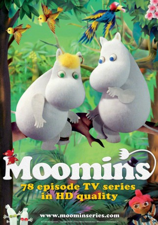

#9678 Die Mumins
Alternativ: The Moomins (Englischer Titel)
 
 IMDB-Wertung: 7.5 / 10
IMDB-Wertung: 7.5 / 10  Metascore: 0
Metascore: 0 
A stop-motion animated children's television series, often referred to as the Fuzzy Felt Moomins, based on the stories and illustrations by the Finnish author Tove Jansson.
Jahr: 1977
Dauer: 71 Minuten
FSK:
Land: Polen Studio: Central Independent TelevisionTonspuren:
Untertitel:
Auflösung: SD (480x268) Größe: 348 MB
Genre: Drama, Abenteuer, Fantasy, Animation/Trick, Familie, Kurzfilm
Regisseur: Lucjan Dembinski, Krystyna Kulczycka, Jadwiga Kudrzycka, Dariusz Zawilski
Drehbuch: Lucjan Dembinski, Tove Jansson, Maria Kossakowska, Anne Wood
Soundtrack:
Darsteller:
- Hans Clarin als Narrator - German, 78 episodes, 1977-1982
- Jennifer Lawrence » #84 on STARmeter CELEBS Born Today Celebrity News Most Popular Celebs PHOTOS Latest Stills Latest Posters Photos We Love EVENTS Awards Central Festival Central Oscars Golden Globes Sundance Cannes Comic-Con Emmy Awards Venice Film Festival Toronto Film Festival Tribeca LA Film Festival All Events News & Community LATEST HEADLINES Jon Favreau’s Star Wars TV Show Reportedly Eyeing Game Of Thrones Actor 16 hours ago | We Got This Covered Michelle Williams to Play Astronaut Christa McAuliffe in 'The Challenger' 17 hours ago | Variety - Film News Dance Dance Revolution Movie in the Works 18 hours ago | Variety - Film News NEWS Top News Movie News TV News Celebrity News Indie News COMMUNITY Contributor Zone Polls Watchlist YOUR WATCHLIST if (!('imdb' in window)) window.imdb = ; window.imdb.watchlistTeaserData = href : /list/watchlist, src : https://m.media-amazon.com/images/G/01/imdb/images/navbar/watchlist_slot1_logged_out-1670046337._CB483525276_.jpg , href : /search/title?count=100&title_type=feature,tv_series, src : https://m.media-amazon.com/images/G/01/imdb/images/navbar/watchlist_slot2_popular-4090757197._CB470041610_.jpg , href : /chart/top, src : https://m.media-amazon.com/images/G/01/imdb/images/navbar/watchlist_slot3_top250-575799966._CB483525276_.jpg ; The essential resource for entertainment professionalsFind industry contacts & talent representationAccess in-development titles not available on IMDbGet the latest news from leading industry tradesClaim your page and control your brand across IMDb & AmazonTryIMDbProFreeTry IMDbPro Free | Help Sign in with Facebook Other Sign in options if (typeof uet == 'function') uet(ne); doWithAds(function()if ('injected_slot' != 'injected_slot') ad_utils.register_ad('injected_navstrip');); doWithAds(function()if ('injected_slot' == 'cornerstone_slot') ad_utils.inject_serverside_ad('injected_navstrip', '');else if ('injected_slot' == 'injected_slot') ad_utils.inject_ad.register('injected_navstrip'); else ad_utils.gpt.render_ad('injected_navstrip');, ad_utils not defined, unable to render client-side GPT ad or injected ad.); doWithAds(function()if ('injected_slot' != 'injected_slot') ad_utils.register_ad('injected_billboard');); doWithAds(function()if ('injected_slot' == 'cornerstone_slot') ad_utils.inject_serverside_ad('injected_billboard', '');else if ('injected_slot' == 'injected_slot') ad_utils.inject_ad.register('injected_billboard'); else ad_utils.gpt.render_ad('injected_billboard');, ad_utils not defined, unable to render client-side GPT ad or injected ad.); Edit The Moomins (1977–1982) if ('csm' in window) csm.measure('csm_body_delivery_started'); Full Cast & Crew Series Directed by Lucjan Dembinski als
- Stanislaw Kwasniak als Narrator - Polish, 66 episodes, 1978-1982
- Stanislaw Wyszynski als Narrator - Polish, 12 episodes, 1977-1978
- Richard Murdoch als Narrator - English (1982), unknown episodes
Datei: X:\Kinder Collections\Mumins\Mumins, Die (1977, FSK, 480x268).avi seit 03.10.2018
Festplatte: Kinder-Filme+Trick
 Alle Filme aus Gruppe 'Kinder Collections\Mumins'
Alle Filme aus Gruppe 'Kinder Collections\Mumins'